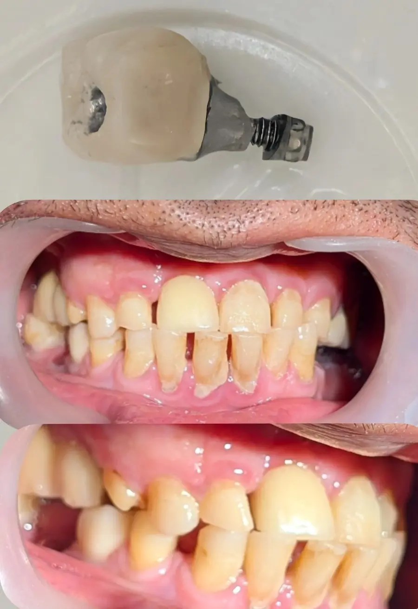

نسخه استخراجشده؛ ترجمه یا تأیید علمی انجام نشده است. وضعیت: captured
برای دندان ۶ پایین راست بیمار، ۹ سال پیش ایمپلنت و روکش انجام شده است. این بار با شکایت لقی روکش آمده است. او اخیراً دندان ۵ همان سمت را در کلینیک دیگری ایمپلنت و روکش کرده و تصور میکند لقی مربوط به همان دندان ۵ است.

بررسی نشان داد منشأ لقی، دندان ۶ (ایمپلنت قدیمی) است، نه دندان ۵. آخرین درمان انجامشده لزوماً متهم نیست؛ منشأ لقی را معاینه تعیین میکند، نه حدس بیمار.
برنامهی استاندارد روشن بود: ایجاد Access Hole روی روکش، دسترسی به پیچ اباتمنت، خارج کردن پیچ شلشده، تعویض با پیچ نو و تحویل مجدد. اما بعد از خارج کردن رستوریشن، یافته غیرمنتظره بود: پیچ صرفاً شل نشده بود، بلکه خود اباتمنت شکسته بود.
لقی روکش ایمپلنت همیشه یعنی پیچ شل نیست؛ همان لقی ساده میتواند به درمانی بهمراتب پیچیدهتر تبدیل شود.
برای ریشهیابی، وضعیت کل دهان بهعنوان یک سیستم یکپارچه بررسی شد و این عوامل کنار هم قرار گرفتند:
نتیجهی بیومکانیکی: نیروهای سنگین فک بهجای پخش شدن در کل قوس، متمرکز روی دندان ۶ وارد شد. ابتدا پیچ شل شد، بیمار مدتی روی روکش لغزان جوید، و در نهایت فشار به حدی رسید که ساختار فلزی اباتمنت شکست.
محیط دهان یک سیستم پویاست؛ از دست رفتن دندانها یا ترمیم غیراصولی سمت مقابل، شرایط بیومکانیکی را بدتر و تخریب را پیشرونده میکند. چکاپ سالانهی ایمپلنت تشریفات نیست: جدی نگرفتنش یک شلشدگی سادهی پیچ را که با یک سفتکردن حل میشد، به شکستگی ساختاری و درمان پیچیده تبدیل میکند.
نوع سؤال: ساخت کلمه · 4 خانه
حروف منبع: ض · ف · ی · ع